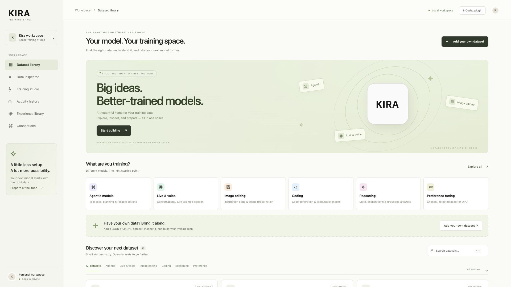

Know what goes in.
Check schemas, duplicates and explicit split leakage. Go deeper with Soup inspection in the local app.
A little space. A lot of possibility.
Hundreds of models out there.
Make one that feels right for you.
Find your data, understand it, and prepare your next fine-tune. Kira brings the pieces together in one local training space.
Built for your workflow. Available as a Codex plugin.

01 / A BETTER STARTING POINT
Explore small starters and attributed open datasets. Pick a category. Find a source. Make it yours.
Loading dataset library…
Starters contain six synthetic examples each, released under CC0. They demonstrate a schema; they are not production training corpora. Public sources keep their own licenses and access terms.
Give it a quick structure check, right here in your browser.
02 / LESS FRICTION. MORE MAKING.
Prepare first. Review what will happen.
Then choose how you want to train.
Check schemas, duplicates and explicit split leakage. Go deeper with Soup inspection in the local app.
Prepare a CUDA text SFT run on Colab, or let Soup handle local SFT or DPO training from inspection through export.
Save datasets, plans, run activity and reviewed lessons. Compare results with your baseline before promoting a model.
SOUP, IF YOU LIKE.
Inspect → validate → review → train → track → export.
Soup runs on your computer with its installed training dependencies. Each training run and export needs your review and a single-use confirmation.
Read the setup guide ↗The guided flow supports text SFT and DPO. Image and audio datasets need compatible recipes and data tooling. Hardware, model access and backend dependencies apply.
03 / YOUR DATA, A LITTLE CLEARER
A quick check for JSON or JSONL training data. Your file is processed in this browser and isn’t uploaded.
Checks row structure, duplicate payloads and explicit train/eval group overlap. This preview cannot certify privacy, semantic quality or training readiness. Use the local app and Soup for deeper inspection.
Only filenames, counts and timestamps are saved on this device. File contents aren’t saved.
THE IDEA, IN UNDER A MINUTE
Actual app footage. Example Codex prompt. Local neural narration. The film demonstrates a prepared workflow; it does not claim a completed training run.
04 / YOUR NEXT IDEA STARTS HERE
Run locally with Python 3.11+.
Add Codex when you want a little help.
Clone the repository, start the local server, and open the address it prints.
git clone https://github.com/saggamer/kira-training-space.git cd kira-training-space python3 plugins/kira-training-space/runtime/server.py
Your app runs at http://127.0.0.1:8765. Imported data stays in the local workspace you select.
From inside your cloned repository, register the marketplace and install the plugin.
codex plugin marketplace add . codex plugin add kira-training-space@kira-training
“Use Kira Training Space to inspect my dataset and prepare a Soup fine-tuning plan for review. Don’t start training yet.”
Open a new Codex chat after installing. You review and authorize compute separately.
Kira Superapp integration is available in the local development workspace. The standalone release includes the local app and Codex plugin. Training is not hosted on this website.